Downtown Diner is a mock website created to demonstrate my frontend development skills, utilizing HTML5, CSS3, JavaScript and Bootstrap 5 to add responsiveness. It is also a display of my ability to create a themed custom design that is visually appealing and user-friendly. The site features a homepage with an introduction to the diner, a menu page showcasing the food and drink offerings, with online ordering functionality and payment processing. Being first presented as a use case scenario in a web development course, it evolved into a visual testament to my continuous learning and growth as a developer.
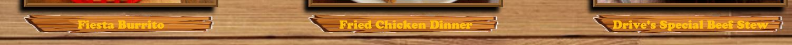
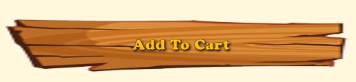
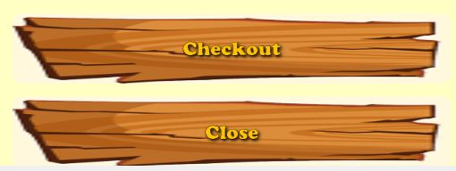
The screen shots above show the navigation buttons, image captions, add to cart button, cart buttons, process payment buttons and submit/reset buttons that have been created with background images to appear as planks of wood, in keeping with the rustic theme of the diner.
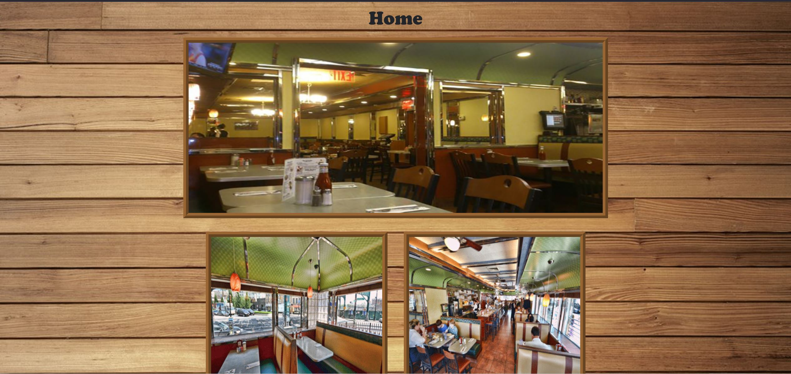
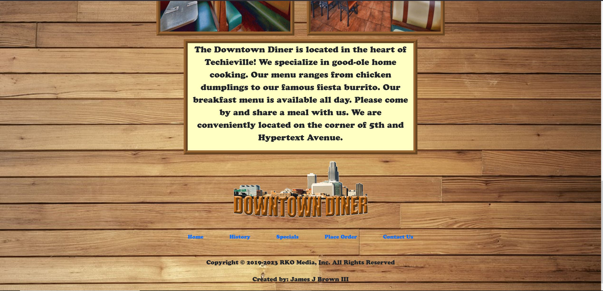
The screen shots above show the home page which is set against a background image of rustic wood paneling. The images and text areas on the home page are bordered with a wood frame design, and the text is styled with a western font to further enhance the rustic theme, which is consistent throughout the site.
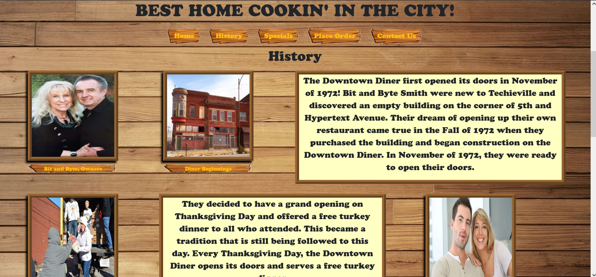
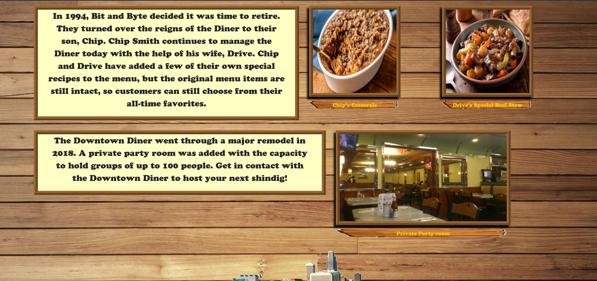
The screen shots above are of the history page, which tells the story of the diner and its origins. The history page is also set against a rustic wood background, with wood framed images and text areas, and styled with a western font to maintain the consistent rustic theme.
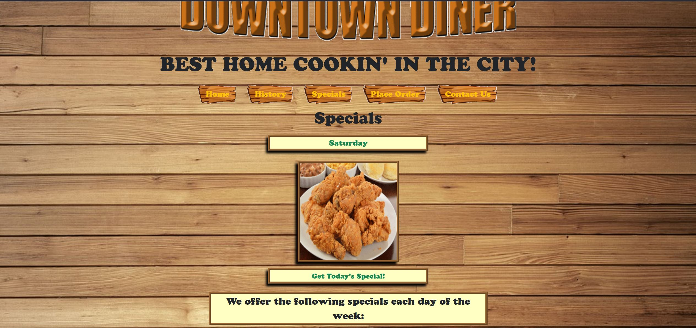
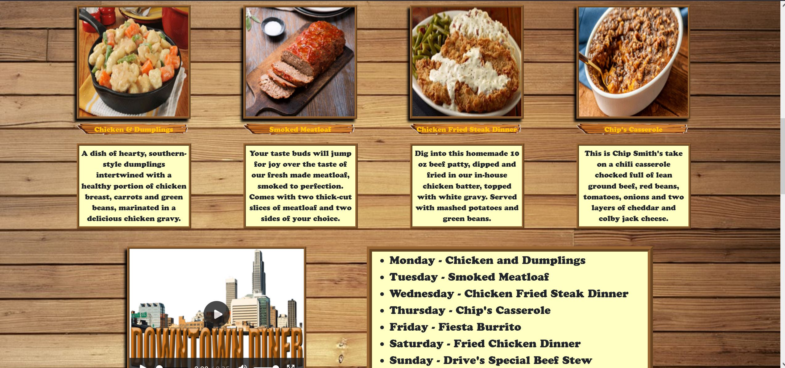
These screen shots display the specials page, which features the daily specials offered by the diner. At the top of the page is an image display that is triggered by a JavaScript function that cycles through an array of images and days of the week, with the output being the image of the special for the current day of the week. Below the image display is a section that lists all of the specials for each day of the week, along with a description of each dish. There is also a video embedded on the specials page that promotes the diner.
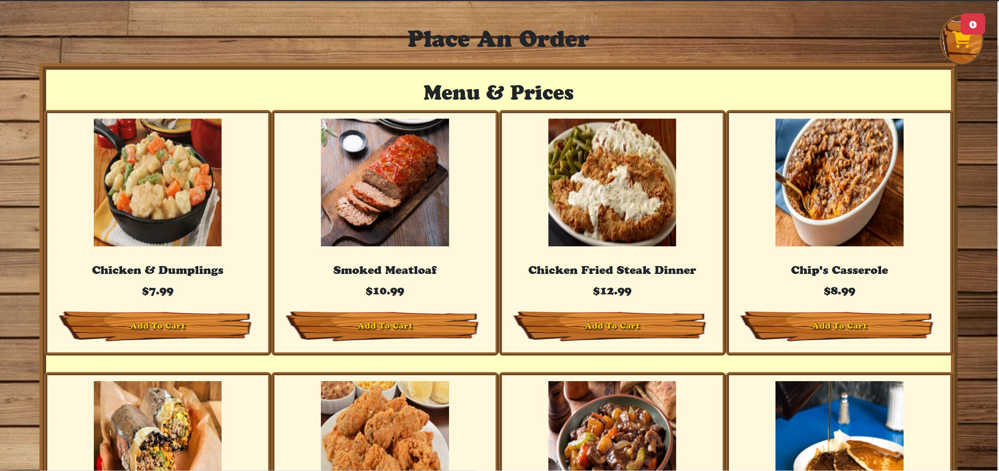
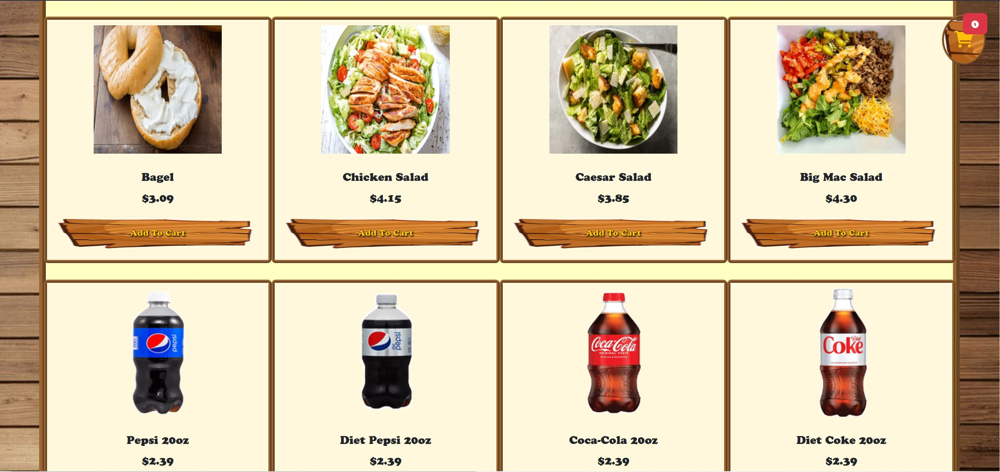
The above screen shots show the place an order page, where a user can view the full menu of main entrees, breakfast items, sides and drinks.
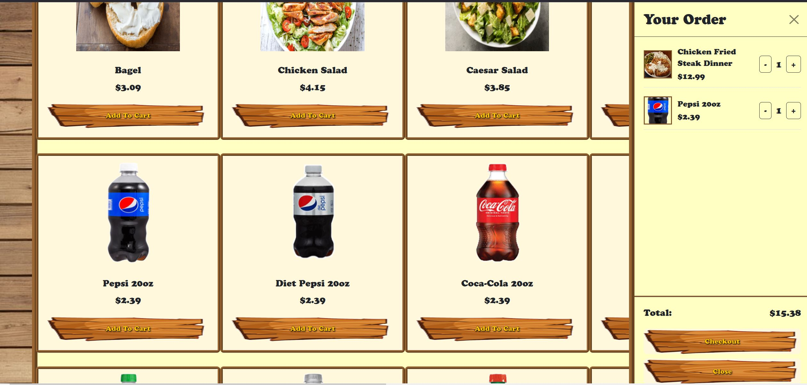
Each menu item has an add to cart button, which allows the user to add the item to their cart. When that button is clicked, the side panel representing the user's cart expands outward from the right side of the screen, displaying a thumbnail image of the item, along with the name, price and quantity of the item. The user can adjust the quantity of each item in their cart, and the total price is updated. At anytime the side panel can be collapsed back to the right side of the screen by clicking the "X" button at the top of the panel, or by clicking anywhere on the screen outside of the panel. At the bottom of the cart panel, under the total price, are two buttons - one that directs the user to a checkout page and a second button giving a user another option to collapse the cart panel.
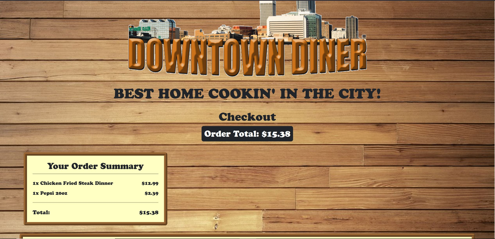
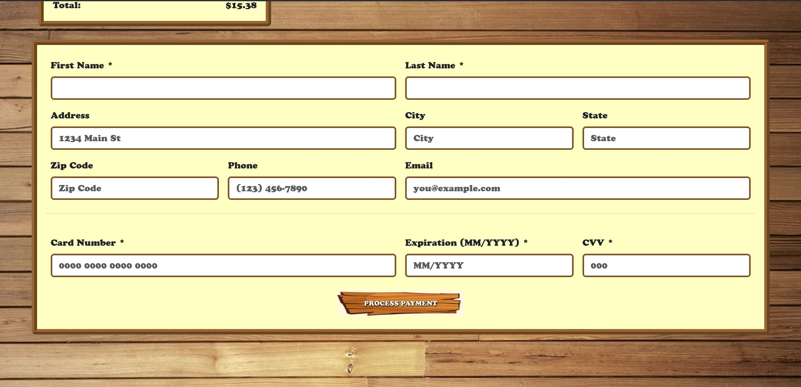
The above screen shots are of the checkout page, which is only accessed by clicking the checkout button at the bottom of the cart panel. Under the page title is a section that displays the total for the entire order, followed by a text area that shows a detailed display of the ordered items and prices. On the next row down is the form that intakes customer information and method of payment.
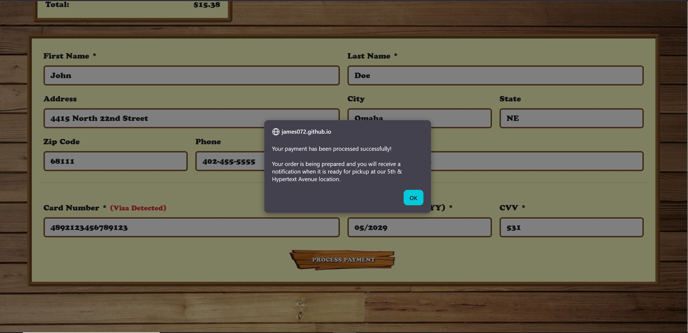
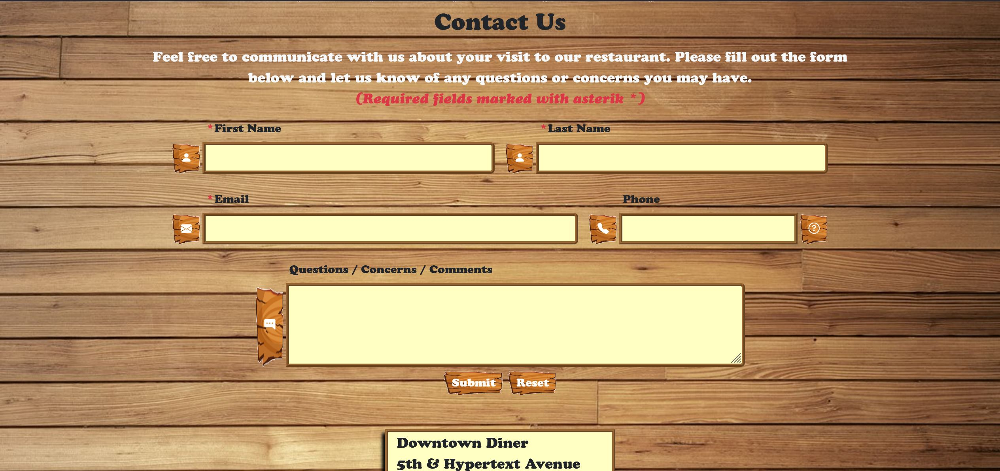
The screen shot to the left shows the action that occurs when the process payment button is clicked on the checkout page, which displays a notification message to the user that their order is being prepared and to expect a second notification for pickup when the order is complete. The screen shot to the right displays the contact form where customers can contact the diner with their questions or concerns.